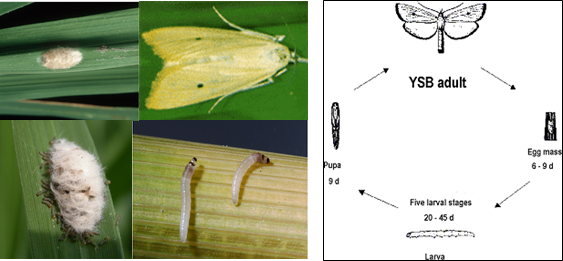

PESTS OF RICE (BORERS AND FOLIAGE FEEDERS) :: Major Pests :: Yellow Stem Borer
1. Yellow stem borer: Scirpophaga incertulas (Pyraustidae: Lepidoptera)
Distribution and Status: Afghanistan, Bangladesh, Burma, Cambodia, China, India, Sri Lanka and Indonesia.
Host range: Rice
Damage symptoms: Larva feeds on the stem and causes drying of the central shoot known as “dead heart” in the young seedlings, and drying of the panicle in grown up plant called “white ear”. Damage ranges from 30-80%.
Whitehead or dead panicles at reproductive stage (IRRI) |
Paddy Stem Borer (Video)
ETL
- 2 egg masses/ m2
- 10% dead hearts - Vegetative stage
- 2% white ear - Flowering stage
 |
Bionomics: Female moth has bright yellowish brown fore wings with a black spot and a tuft of yellow anal hairs while male is smaller with pale yellow forewings without black spot. Each female lays 170-200 eggs in a mass of 15-80 on the upper surface of leaf tips covered with buff coloured hairs |
The egg period 6-9 days; larva pale yellow with dark brown head, swims in water and bores in to the stem near the node. The larva migrates to other tillers also. Larval period 20-45 days, pupation in white silken cocoon. Pupa dark brown in color, pupal period is 6-10 days. |
Management
- Grow resistant varieties viz., Ratna, Jaya, TKM 6, IR 20 and IR 26, Sayasree, Saket, IET 3127, IET 2812, MTU 5849, PTB 12, PTB 20, PT 321, H 4
- Clip the seedling tips before transplanting to eliminate egg masses and collect & destroy the egg masses in main field.
- Avoid close planting and continuous water stagnation at early stages.
- Collect and destroy the dead hearts and white ears.
- Set up light traps to attract and kill the moths.
- Install sex pheromone traps to monitor and mass trap.
- Release the egg parasitoid, Trichogramma japonicum twiceon 30 and 37 DAT @ 5 cc/ha/release.
- Apply Bacillus thuringiensis var kurstaki and neem seed kernel extract in the combination of 2.5 g/L and 1% to reduce the oviposition by the stem borer.
- Apply carbofuran 3 G @ 25 kg or benfuracarb 3 G 33 kg or or chlorantraniliprole 0.4 G 10 kg or fipronil 0.3 G 17-25 kg or cartap hydrochloride 4 G 18.75 kg or spray acephate 75 SP 666-1000 g cartap hydrochloride 50 SP 1 kg or monocrotophos 36 SL 1.0 L or quinalphos 25 EC 1.0 L or azadirachtin 0.15 W/W 1.5-2.5 L or azadirachtin 5 % 400 ml or carbosulfan 25 EC 800-1000 ml or chlorantraniliprole 18.5 SC 150 ml or ethofenoprox 10 EC 500-750 ml or fipronil 5 SC 1-1.5 L or fipronil 80 WG 50-62.5 g or flubendiamide 20 WG 125 g or flubendiamide 39.35 M/M SC 50 ml or lambda-cyhalothrin 2.5 EC 500 ml/ 5 EC 250 ml or phosphamidon 40 SL 1.25 L or thiacloprid 21.7 SC 500 ml or thiamethoxam 25 WG 100 g per ha using water @ 500 L/ha
- Harvest the crop up to the ground level and disturb the stubbles with plough immediately after the harvest